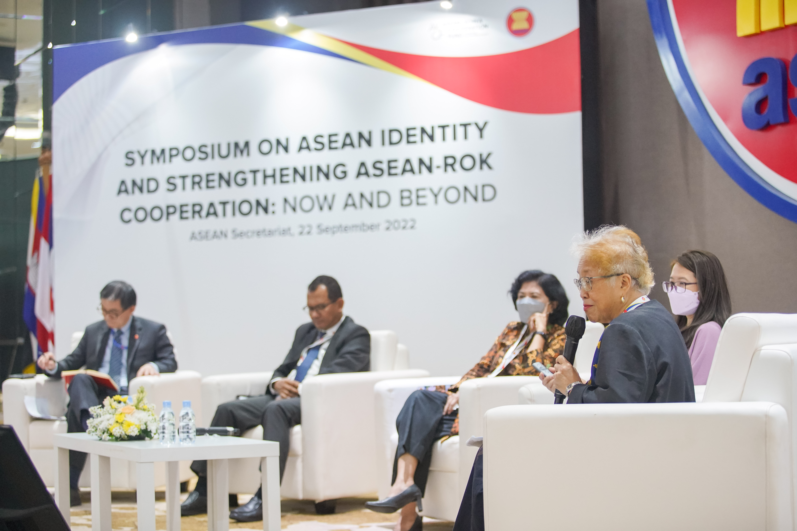

Throughout our history, ISACC has stimulated critical thinking by engaging churches, grassroots communities, and the public on vital issues. Notable events include:
These conferences stimulated reflection and concerted church responses to authoritarian rule.
Conducted for executives of development agencies and church leaders, this seminar was led by nationalist thinker and scholar Renato Constantino.
Both courses were led by John Howard Yoder, known for his book "The Politics of Jesus" and as a leading thinker on active non-violence.
A course by Andrew Kirk, then associate director of the London Institute for Contemporary Christianity, focusing on tensions confronting theology in a revolutionary situation.
A lecture by Ronald Sider, author of "Rich Christians in an Age of Hunger" and chairperson of Evangelicals for Social Action.
Numerous public events on critical issues such as human rights, vigilantism, national debt, insurgency, US Bases, women and tradition, delivered by national experts and leaders.
Our multi-media shows serve as culture-friendly learning tools for a people whose cognitive style is largely visual, acting as artistic statements of our commitment to wholistic transformation. Our productions include:
A 15-minute account of the February Revolution of 1986, with an analysis of its significance in the light of the Filipino’s socio-psychological makeup.
A 27-minute show exploring the gospel as it relates to Filipino religious beliefs.
A complex, multi-projector show that retells gospel stories in a contemporary Filipino context.
A 15-minute documentary discussing the traditional personality-based Philippine electoral system versus an issue-based alternative, providing pointers for choosing leaders wisely.
A 17-minute show presenting the situation of Filipina domestic helpers in Hong Kong through interviews, raising questions about the viability of the migrant labor industry.
A 20-minute show tackling nationalism from biblical perspectives, aimed at stimulating discussion in churches on Filipino Christians’ basis for socio-political involvement in national affairs and development.
A 7-minute show presenting the state of Philippine media and posing the question of media’s effect in shaping tomorrow’s society.
ISACC’s advocacy work has deep historical roots, culminating in the mobilization of church communities during the resistance to the Marcos regime. We organized Konfes (Konsensiya ng Febrero Siete), a coalition that became a center of evangelical presence at the barricades during the February 1986 People Power uprising.
Today, our long-term Popular Education for Good Governance (PEGG) program continues this legacy. A unique feature of our work is the integration of Biblical perspectives into the analysis of complex issues, intentionally training young people to become biblically literate and apply God’s Word to the public square.
During the 2022 Presidential Election, we launched a major webinar series on “Faith and Politics.” In partnership with Evangelical scholars and experts, we aimed to help Christians engage in national transformation based on sound biblical-theological teachings.
This initiative is a collaboration with the PCEC Justice, Peace and Reconciliation Commission (JPARCOM) and Langham Publishing (UK). The series will result in a book that addresses the need for contextualized resources in a region where most seminaries rely on Western textbooks, hoping to be a valuable contribution to the conversation on theology and politics in the Philippines and Asia.